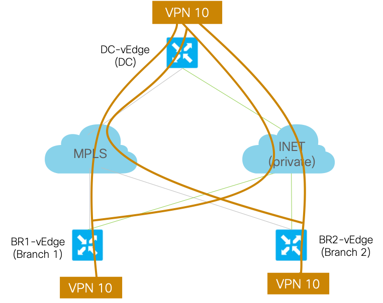
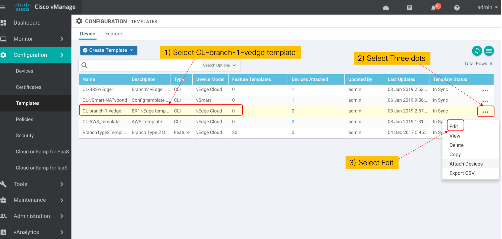

Task 5 - VPN on the Fabric
This task will walk through the steps to create full mesh VPN on the SD-WAN Fabric. Hence the traffic on these VPNs can be passed on the SDWAN Fabric keeping the end-to-end segmentation. We will create VPN number 10, 20, 30 in this exercise. .
This configuration of vEdge can be done via Feature Templates or by using CLI Template on the vManage. We will use CLI Template of the vEdge for this lab. To provide differentiation, two separate CLI Templates will be created for vEdges in DC and Branches.
SDWAN Lab Topology
The logical topology of VPN number 10 is shown in below figure:

Pre-requisite: SDWAN controllers and 3 vEdges (in Branches & DC) must be fully operational. If those are not installed (or not operational) then please complete the previous Tasks first.
Step 1: Create VPNs on Branch 1
-
Log on to the vManage from a web browser (if not already open) and use credentials of
adminandadmin: -
On the vManage GUI, navigate to Configuration > Templates > Device.
-
Then Select the CLI template named "BR1-vEdge01". Next, Click on the three dots on right-side as shown in below screenshot.

-
Edit option will allow you to add additional configurations in this template.
- Scroll all the way to the end of existing template,
- Then you can add (copy & paste will work) the below configuration at the end of the exiting template,
- Do not make any other changes to existing configurations in this template
vpn 10 name AppVPN interface loopback10 ip address 10.102.10.10/32 no shutdown ! vpn 20 name BusinessVPN interface loopback20 ip address 10.102.20.10/32 no shutdown ! vpn 30 name MarketingVPN interface loopback30 ip address 10.102.30.10/32 no shutdown
Important Note: Be very careful in making configuration changes on vEdge. Do NOT change any configuration of VPN 512 as it can result in loss of connectivity to the vEdge - which can not be restored. You will have to start the lab again from Task #1 if you loose network connectivity to a vEdge. -
After adding above configuration to this Template, Click on
Updatebutton. -
On the next screen,
- Select the
BR1-vEdgeunder the Device list section (left part of screen). -
Then Select both
"Config Preview"and"Config Diff"options to verify that VPN 10 related configurations are added to this vEdge, and no changes to VPN 512 (or other interfaces) are done.Important Note: Be very careful in making configuration changes on vEdge. Do NOT change any configuration of VPN 512 as it can result in loss of connectivity to the vEdge - which can not be restored. You will have to start the lab again from Task #1 if you loose network connectivity to a vEdge. -
Once you have verifed the config changes Click on
Configure Devicesbutton on the lower section of screen, as shown in below screenshot:

- Select the
This completes the configuration of VPN 10, 20 & 30 on BR1-vEdge
Step 3: Create VPNs on Data Center and Branch 2
Now lets create VPNs on remaining vEdge. Follow the same steps of modifying the template and add the following configs for DC and BR2
| vEdge | Configs |
|---|---|
| DC1-vEdge01 | vpn 10 interface loopback10 ip address 10.101.10.10/32 no shutdown ! vpn 20 interface loopback20 ip address 10.101.20.10/32 no shutdown ! vpn 30 interface loopback30 ip address 10.101.30.10/32 no shutdown |
| BR2-vEdge01 | vpn 10 interface loopback10 ip address 10.103.10.10/32 no shutdown ! vpn 20 interface loopback20 ip address 10.103.20.10/32 no shutdown ! vpn 30 interface loopback30 ip address 10.103.30.10/32 no shutdown |
Step 4: Verify VPNs routing on all vEdges
Now we can verify the IP connectivity between vEdge in Branch-1 and Branch-2 on the VPN 10.
-
Execute below commands on
show ip route show ip route vpn 10 show omp routes show omp routes vpn 10You should verify that each vEdge has learned the LAN segment IP address of remote vEdge (within VPN 10, 20 and 30)
-
ping remomte IPs to verify connectivity
ping 10.101.10.10 vpn 10
You have now completed this task of adding VPNs on the SD-WAN Fabric